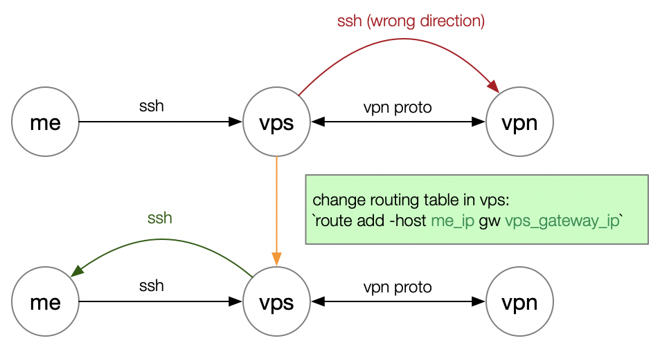

Set up ocserv docker
dependencies: docker, openconnect
1.Download docker
git clone https://github.com/TommyLau/docker-ocserv.git
2.Change Dockerfile
...
# change key server
&& gpg --keyserver hkp://ipv4.pool.sks-keyservers.net --recv-key 7F343FA7 \
&& gpg --keyserver hkp://ipv4.pool.sks-keyservers.net --recv-key 96865171 \
...
# change expose port
&& sed -i 's/tcp-port = 443/tcp-port = 4433/' /etc/ocserv/ocserv.conf \
&& sed -i 's/udp-port = 443/udp-port = 4433/' /etc/ocserv/ocserv.conf \
...
3.Build
docker build -t newocserv .
4.Run server
docker run --name newocserv --privileged -p 4433:4433 -p 4433:4433/udp -d newocserv
5.Test client
sudo yum install openconnect
sudo openconnect --protocol=anyconnect https://xxx.xxx.xxx.xxx:port
一些问题
- RUN命令不知道为什么卡住了，重启docker重新build就好了。
- 从vps上测试连接vpn需要在vps上修改路由表，修改前可以看到所有的目标地址都是从
192.168.1.253这个网关地址出去

$ route -n
Kernel IP routing table
Destination Gateway Genmask Flags Metric Ref Use Iface
0.0.0.0 192.168.1.253 0.0.0.0 UG 0 0 0 eth0
10.8.0.0 10.8.0.2 255.255.255.0 UG 0 0 0 tun0
10.8.0.2 0.0.0.0 255.255.255.255 UH 0 0 0 tun0
169.254.0.0 0.0.0.0 255.255.0.0 U 1002 0 0 eth0
192.168.1.0 0.0.0.0 255.255.255.0 U 0 0 0 eth0
新增路由规则，表示回本机的流量经过vps的eth0网关，这样当vps连接上vpn的时候ssh流量就不会转发到vpn上面去了。
route add -host 145.94.204.56 gw 192.168.1.253
前面没有#的代表vpn新增加的路由规则，第一行第一列0.0.0.0的意思是说除了路由表之外的所有网络目的地址，第二列的意思应该是VPN服务器分配本机的地址如192.168.99.138
$ netstat -nr
Kernel IP routing table
Destination Gateway Genmask Flags MSS Window irtt Iface
0.0.0.0 0.0.0.0 0.0.0.0 U 0 0 0 tun1
#10.8.0.0 10.8.0.2 255.255.255.0 UG 0 0 0 tun0
#10.8.0.2 0.0.0.0 255.255.255.255 UH 0 0 0 tun0
35.196.96.100 192.168.1.253 255.255.255.255 UGH 0 0 0 eth0
145.94.204.56 192.168.1.253 255.255.255.255 UGH 0 0 0 eth0
#169.254.0.0 0.0.0.0 255.255.0.0 U 0 0 0 eth0
#192.168.1.0 0.0.0.0 255.255.255.0 U 0 0 0 eth0
192.168.99.0 0.0.0.0 255.255.255.0 U 0 0 0 tun1
# same
$ route -n
Kernel IP routing table
Destination Gateway Genmask Flags Metric Ref Use Iface
0.0.0.0 0.0.0.0 0.0.0.0 U 0 0 0 tun1
10.8.0.0 10.8.0.2 255.255.255.0 UG 0 0 0 tun0
10.8.0.2 0.0.0.0 255.255.255.255 UH 0 0 0 tun0
35.196.96.100 192.168.1.253 255.255.255.255 UGH 0 0 0 eth0
145.94.204.56 192.168.1.253 255.255.255.255 UGH 0 0 0 eth0
169.254.0.0 0.0.0.0 255.255.0.0 U 1002 0 0 eth0
192.168.1.0 0.0.0.0 255.255.255.0 U 0 0 0 eth0
192.168.99.0 0.0.0.0 255.255.255.0 U 0 0 0 tun1
Ref
https://github.com/TommyLau/docker-ocserv
https://tommy.net.cn/2015/02/12/deploy-openconnect-server-with-docker/